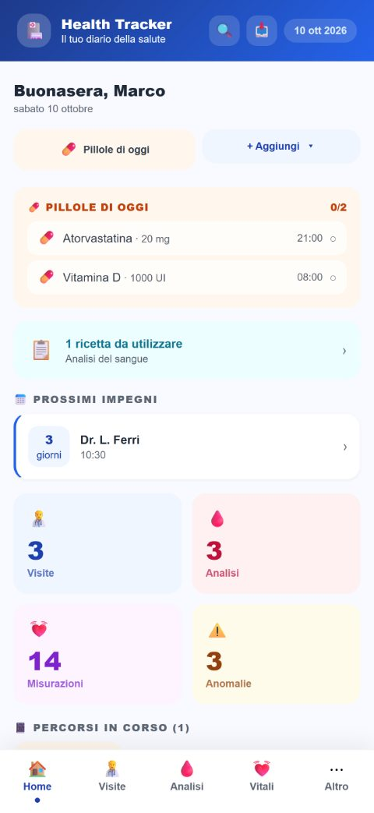
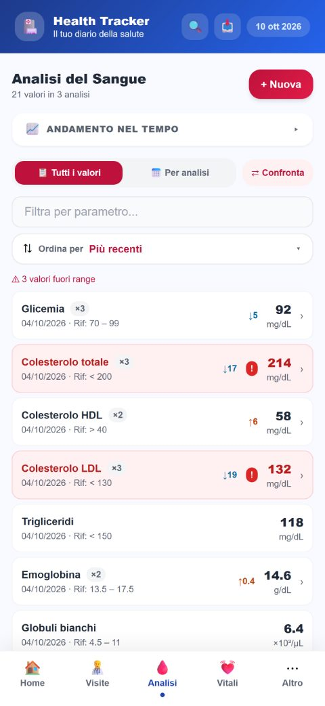
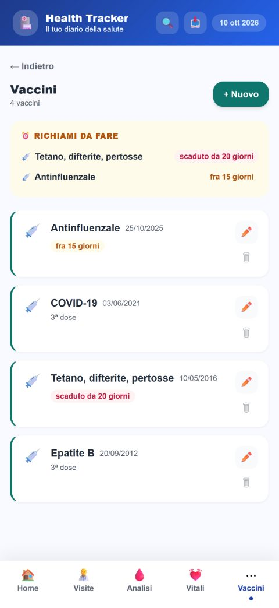
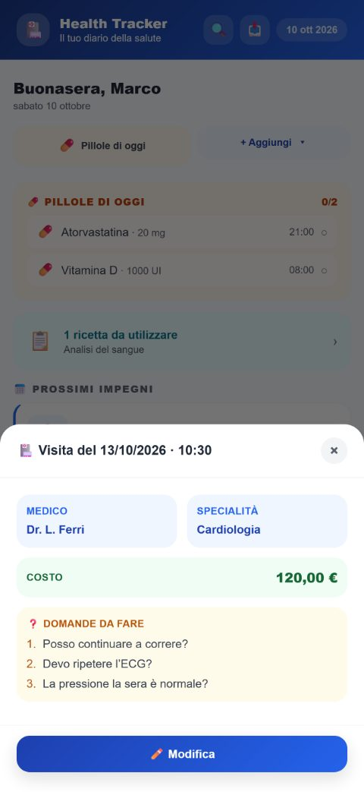

Cosa fa
Fotografa il referto
Fai una foto o carica il PDF delle analisi: l’app riconosce i valori e li compila per te, mostrandoti cosa ha letto prima di salvare. Il riconoscimento avviene sul telefono.
I tuoi valori nel tempo
Per ogni parametro vedi l’ultimo valore, lo storico e un grafico, con gli intervalli di riferimento del tuo laboratorio. Puoi confrontare due analisi.
Visite e domande per il medico
Segni le visite fatte e da fare. Prima della visita scrivi le domande: il giorno prima un promemoria ti ricorda quante sono.
Farmaci e promemoria
Le terapie con gli orari, le pillole di oggi da spuntare, l’avviso quando la scatola sta per finire.
Vaccini e richiami
Ogni vaccino con data, dose e lotto. I richiami scaduti o vicini in cima, e un promemoria una settimana prima.
Peso, pressione e app Salute
Segni peso, pressione, glicemia e gli altri dati vitali. Se vuoi, li importi dall’app Salute di Apple: sola lettura, e iOS ti chiede il permesso.
Segui un problema dall’inizio alla fine
Apri un percorso — un fastidio, una cura — e ci colleghi visite, analisi, terapie e aggiornamenti su come va.
Il referto da portare al medico
Un PDF riepilogativo con analisi, terapie, allergie ed esami, da mostrare o stampare.
La scheda di emergenza
Gruppo sanguigno, allergie gravi, terapie in corso e chi chiamare, in due tocchi.
Allenamenti
Segni gli allenamenti con durata, distanza e calorie, e vedi quanto ti sei allenato per ogni attività.
Tutta la famiglia
Con lo Sblocco Completo tieni profili separati per le persone di cui segui la salute.
I dati sono tuoi
Backup completo in un file che tieni dove vuoi, anche protetto da password. Se cambi telefono te li porti dietro.
Nessun account, nessun server
- Non c’è registrazione e non c’è accesso.
- Tutto quello che scrivi resta nella memoria del telefono: non viene inviato da nessuna parte, non lo vediamo noi e non lo vede nessun altro.
- Puoi chiudere l’app con Face ID e mettere un lucchetto con codice sulle parti più riservate.
Gratis, con uno Sblocco Completo facoltativo
L’app si scarica e si usa gratis. Lo Sblocco Completo è un acquisto unico, senza abbonamento, e aggiunge tra le altre cose il referto PDF, le statistiche con i grafici, i profili di famiglia, i promemoria delle terapie e il riepilogo annuale delle spese sanitarie.
Diario della Salute è uno strumento di archivio personale. Non fornisce diagnosi, consigli medici o terapie, non interpreta i tuoi valori e non sostituisce il parere di un professionista sanitario. Per qualsiasi dubbio sulla tua salute, rivolgiti al tuo medico.